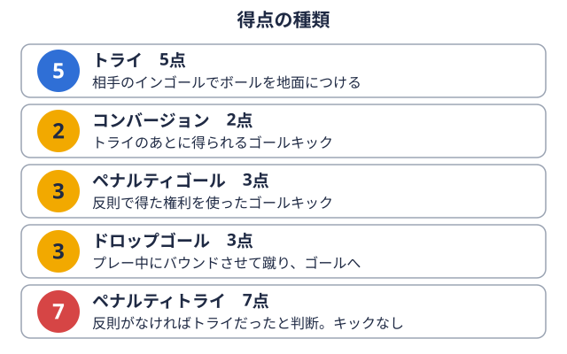

技術 2026-10-21
ラグビーのモールの組み方とコツ｜参加ルール・反則・段階別の練習法
「モールボールを持った選手を中心に、両チーム1人以上が立ったまま組み合い、持ち上げたボールを押し合う状態。 用語辞典で見るに入ったのに、オフサイドボールを持つ、または最後に触れた味方より前にいる状態でプレーに加わる反則。
用語辞典で見るに入ったのに、オフサイドボールを持つ、または最後に触れた味方より前にいる状態でプレーに加わる反則。 用語辞典で見るを取られた」「ドライブしているつもりなのに、なぜか崩れてしまう」。モールはフォワード背番号1〜8番の8人。スクラムを組み、体をぶつけてボールを確保するのが主な役目。
用語辞典で見るを取られた」「ドライブしているつもりなのに、なぜか崩れてしまう」。モールはフォワード背番号1〜8番の8人。スクラムを組み、体をぶつけてボールを確保するのが主な役目。 用語辞典で見るだけでなく、バックス背番号9〜15番の7人。ボールを受けて走り、パスやキックで攻めるのが主な役目。用語辞典で見るの選手も加わる場面があるため、基本の約束事をあいまいなまま覚えてしまうと、練習のたびに同じ指摘を受けやすいプレーです。この記事では、ワールドラグビーの競技規則第16条（モール）と、2026年6月1日から適用が始まったモールの適用ガイドライン、日本ラグビーフットボール協会の通達をもとに、成立条件、参加のしかた、反則になりやすい動きを整理します。そのうえで、部内練習に落とし込める段階別の練習の組み立て方を紹介します。
用語辞典で見るだけでなく、バックス背番号9〜15番の7人。ボールを受けて走り、パスやキックで攻めるのが主な役目。用語辞典で見るの選手も加わる場面があるため、基本の約束事をあいまいなまま覚えてしまうと、練習のたびに同じ指摘を受けやすいプレーです。この記事では、ワールドラグビーの競技規則第16条（モール）と、2026年6月1日から適用が始まったモールの適用ガイドライン、日本ラグビーフットボール協会の通達をもとに、成立条件、参加のしかた、反則になりやすい動きを整理します。そのうえで、部内練習に落とし込める段階別の練習の組み立て方を紹介します。
なお、この記事は競技規則と協会の発表を整理したものです。練習メニューの部分は編集部が組み立てた一例であり、チームの方針や指導者の判断を優先してください。
モールとは何か｜成立の条件を押さえる
ワールドラグビーのLaw 16には、モールの目的が「ボールを地面から離した状態で保持したまま、選手がボールを争えるようにすること」と書かれています。成立の条件は、条文の要約では次のとおりです。
- ボールキャリアーがいること
- 両チームから最低1人ずつ、ボールキャリアーにバインド腕を使って、味方や相手の体につかまって組むこと。スクラムやラック、モールで必要になる。
 用語辞典で見る（組み付く）していること
用語辞典で見る（組み付く）していること - 関わっている全員が立っていること
つまり、ボールを持った選手に相手が組み付き、味方もそこに加わって、全員が立った状態になったときに初めてモールになります。ボールを持った選手がタックルボールを持つ相手をつかんで地面に倒すプレー。倒したあとは、すぐにボールから離れなければならない。用語辞典で見るされて倒れた時点は、モールではなくタックルやラック地面にあるボールの上で、両チーム1人以上が立ったまま組み合い、ボールを奪い合う状態。手は使えない。用語辞典で見るの局面です。ラックとの違いに不安がある方は、ブレイクダウン練習とジャッカルのコツも併せて確認してください。用語の確認はラグビー用語集（初心者向け）が使えます。
また、モールはフィールド・オブ・プレー内（ゴールラインとタッチライングラウンドの長い辺に引かれた線。ボールや選手がこの線の外に出ると、プレーが止まる。 用語辞典で見るの内側）でしか成立しません。ラインアウトボールが横のライン（タッチライン）の外に出たあとの再開方法。2列に並び、投げ入れたボールを取り合う。
用語辞典で見るの内側）でしか成立しません。ラインアウトボールが横のライン（タッチライン）の外に出たあとの再開方法。2列に並び、投げ入れたボールを取り合う。 用語辞典で見るの後にできる集団がそのままモールになるのは、この条件を満たした場合です。
用語辞典で見るの後にできる集団がそのままモールになるのは、この条件を満たした場合です。
参加のしかた｜「最後尾にバインド」が基本
モールで一番ミスが出やすいのは、参加のしかたです。ワールドラグビーは2026年5月8日に、モールに関する新しい適用ガイドライン（Law Application Guideline）を発表し、2026年6月1日から適用するとしています。日本ラグビーフットボール協会も2026年5月18日付で通達を出しており、施行は2026年6月1日以降に始まる新規大会からとされています。
ワールドラグビーのガイドラインと協会の通達に共通して書かれている、参加のしかたの要点は次のとおりです。
- モールに加わる選手は、モールの最後尾の選手にバインドする
- 2人以上でチェーン（鎖）を作り、横や外側から回り込むようにして参加することはしない
- バインドは、手から肩までの腕全体を接触させ、相手ではなく味方の肩から腰の間をしっかりつかむ形とされている
ワールドラグビーはこのガイドラインについて、「法律そのものの変更ではない」と明記しています。つまり、新しいルールが加わったというより、すでにある条文の運用を整理して、レフェリーが取り締まりやすくした位置づけです。この点は、日本協会の2026年の通達全体を整理した2026年ラグビーのルール改正まとめでも触れています。
注意したいのは、「新規大会から適用」という書き方です。6月1日より前に開幕している大会に、いつから適用されるかは、通達の文面だけでは判断できません。秋の公式戦で厳しく吹かれるかどうかは、大会主催者や審判部の説明を確認してください。
反則になりやすい動き
競技規則第16条の条文の要約と、2026年6月のガイドラインから、練習で意識したい反則を整理します。反則の細かな扱い（ペナルティキックかフリーキックか）は条文ごとに異なるため、判断が必要な場合は日本協会の競技規則を確認してください。
| 動き | なぜ問題になるか |
|---|---|
| 横や前から回り込んで加わる | 最後尾にバインドせず、オンサイドの位置から参加していない |
| ボールよりも前に出てモールに関わる | ボールを越えた選手はオフサイドの扱いになる、と日本協会の通達にある |
| バインドが外れたまま残る | 押す位置、または合法なバインドを失った選手は離れる必要がある、とガイドラインにある |
| 相手を引き倒す、モールを故意に崩す | 条文では、モールを故意につぶすことや相手を引き出すことが禁じられている |
| ボールキャリアーが後ろへ下がる | 条文の要約では、モールはトライラインに向かって動く必要があるとされる |
| 頭と肩を腰より低くして加わる | 条文の要約では、頭と肩を腰より低くして参加することは認められていない |
ここで重要なのは「ボールを越えたら離れる」という考え方です。ワールドラグビーは、ボールを越えた位置に立って争いに参加していない選手や、引っ張る位置にいる選手は、モールから離れることを認識するべきだとしています。練習では「自分は今、ボールより前にいないか」「バインドは切れていないか」を、声に出して確認する習慣をつけると、試合でも反射的に動けるようになります。
モールが終わるとき｜成功と失敗
条文の要約では、モールは次の場合に終わります。
- ボールキャリアーがモールから離れる
- ボールが地面に触れる
- トライラインに達する（トライ相手のインゴール（ゴールの奥のエリア）で、ボールを地面につける得点。5点。

用語辞典で見るやタッチダウンにつながる場合）
一方で、モールが止まって動かなくなった場合は注意が必要です。条文の要約では、約5秒間前進せず、ボールが見えている状態なら、レフェリーが「使え（ユーズイット）」と指示します。その指示のあとにボールが出ないとスクラム試合が止まったあとの再開方法。両チーム8人ずつが体を組み合わせて向かい合い、間に入れたボールを足で奪い合う。用語辞典で見るになります。ボールが出てこないまま止まった場合も、スクラムになる場合があります。どちらのチームボールのスクラムかは状況により異なるため、細部は競技規則を確認してください。
練習では「止まったらすぐにボールを出す」判断も練習に入れておきます。ボールを持ち続けて粘る時間が長いほど、反則やスクラムのリスクが上がるためです。
役割別の動きの整理
モールの中の役割の呼び方は、チームごとに異なります。ここでは編集部が、動きの違いが分かりやすいよう次のように分けて説明します。
ボールキャリアー
最初にボールを持つ選手です。相手に当たられてもボールを前に保ち、味方が最後尾に加わる時間を作ります。条文の上では、モールに入ったあとボールキャリアーだけが地面に倒れてよいとされていて、その場合はすぐにボールを出さなければなりません。倒れたあとでボールが出てこないと、スクラムになります。
先頭付近でバインドして押す選手
ボールキャリアーのすぐ横や後ろでバインドし、姿勢を低く保って前に押します。ここで頭と肩が腰より下がらないようにすることと、バインドを外さないことが大切です。押す方向がずれると、モールが横に流れて崩れやすくなります。
後ろから加わる選手
最後尾の選手にバインドして加わります。サイドから回り込まず、必ず後ろから入るのが約束事です。後ろから入る選手が早く入れるかどうかで、モールの前進力は変わります。入るタイミングを声でそろえる練習が有効です。
ボールを出す役割
ボールをモールの後ろ側へ送り、スクラムハーフ9番のポジション。人が固まった場所からボールを取り出し、味方へパスして攻撃を始める。用語辞典で見るなどが受けられる状態をつくる役割です。スクラムハーフのパスや判断を鍛えたい方は、スクラムハーフのパス練習も参考になります。
ディフェンス側
条文には、ディフェンス側の離脱と再加入についての記述があります。要約すると、ディフェンス側がいったんモールから全員離れて、再び加わるときは、攻撃側の最前の選手にバインドする必要があります。ディフェンス側でも、モールを故意につぶすことや、相手の選手をモールから引き出すことは認められていません。
段階別の練習の組み立て（編集部の一例）
ここからは、編集部が部内練習に使いやすいように組み立てた一例です。安全面のため、必ず指導者や学生コーチが付き添い、体調や首、肩の違和感がある選手は休ませてください。
ステップ1｜静止したバインド確認
ボールを持った選手を立たせ、味方が一人ずつ後ろから加わる練習です。手から肩までの腕全体で、味方の肩から腰の間をつかめているか、肩の高さが腰より下がっていないかを、お互いに確認します。まずは動かさず、形だけを確認します。
ステップ2｜最後尾へのバインド練習
横からではなく、必ず最後尾の選手に入る動きを反復します。2人以上でチェーンを作って加わらないことも、このステップで体に覚えさせます。人数は少なめにして、フォームが崩れたらその場で止めて直します。
ステップ3｜低い姿勢での前進
相手のいない状態、またはパッドを持った補助を相手にして、低い姿勢でトライラインに向かって前進します。足の運びをそろえることと、前進のあいだにバインドを切らないことを重点に置きます。
ステップ4｜ボール出し
モールを動かし続けたまま、ボールを後ろへ送る流れを練習します。止まったらすぐ出すという判断を共有し、スクラムハーフ役の選手が受ける位置と声かけを決めておきます。
ステップ5｜ディフェンスを入れた対人
ディフェンス役を入れて、レフェリー役の部員や指導者が反則の有無を確認します。ここで特に確認したいのは、ボールを越えた選手がいないか、バインドの外れた選手が残っていないか、故意に崩していないかの3点です。強度は段階的に上げ、危険を感じたらすぐ止めます。頭部のケガが疑われる場面の扱いは、脳震盪対応と段階的競技復帰で整理しています。
ポジション別に見たモールの関わり方
モールにはフォワード全員が関わることが多いですが、ポジションによって求められる役割は変わります。ロック4番・5番のポジション。ラインアウトで跳んでボールを取り、スクラムでは前の3人を後ろから押す。用語辞典で見るやフッカー2番のポジション。スクラムの中央でボールを足でかき出し、ラインアウトでは投げ入れ役も務める。用語辞典で見るなどラインアウトからモールにつなげる機会が多い選手は、ロックの練習法やフッカーのスローイングのコツでラインアウトの動きを確認できます。プロップ1番と3番のポジション。スクラムの最前列の左右で組み、チームの押す力を支える。用語辞典で見るの身体づくりはプロップの練習メニューも参考になります。
自チームと相手チームの傾向を確認する
モールは試合の中で、得点につながる場面でも、反則による失点につながる場面でもあります。自チームや次の対戦相手の戦い方を数字で確認するには、ラグビーマニアが掲載している順位表と記録室が役立ちます。
- 関東大学対抗戦Aグループの順位表や日程
- 関東大学リーグ戦1部の順位表や日程
- 関東大学対抗戦Aグループの記録室
これらは勝敗や得失点などの記録をまとめたページで、モールそのものの成否を数える統計ではありません。ただし、得失点の傾向を見ることで、接戦が多いチームか、大差の試合が多いチームかといった試合展開をつかむ手がかりになります。さらに、過去のシーズンの全試合は2023年関東大学対抗戦Aグループ 明治大のシーズン記録のような記事から確認できます。
まとめ
モールで押さえたい要点は、次のとおりです。
- 成立条件は、ボールキャリアーと両チーム各1人以上のバインド、全員が立っていること
- 参加は最後尾の選手にバインドする。横や外側からのチーム参加はしない
- ボールを越えた選手や、バインドが外れた選手は、モールから離れる
- 止まったら早くボールを出す。止まったままではスクラムになる場合がある
- 練習は「静止したバインド確認」から始め、段階的に強度を上げる
2026年6月の適用ガイドラインは、条文の変更ではなく運用の整理だとされています。ただし、実際の運用は大会ごとに異なる場合があるため、シーズンの前や試合の前に、大会主催者の説明や審判部の方針を確認しておくと安心です。
出典
この部活・競技を応援したい方へ
取材してほしい部活を募集中
オフシーズン・引退後に、長期インターンという選択
部活で培った力を実務で試す。16タイプ診断（30秒）で合う企業がわかります。